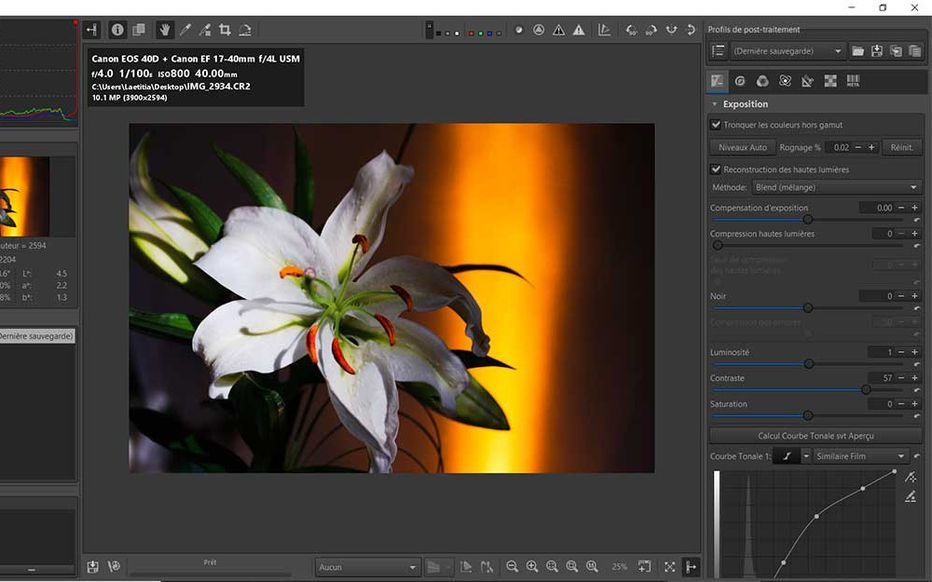

Le traitement d'images numériques
Le traitement d’image est un domaine qui consiste à acquérir, analyser, transformer et améliorer des images pour en extraire de l’information utile ou les rendre plus adaptées à certaines applications.

Comment se fait le traitement d'images ?
- Acquisition de l’image : obtenir l’image à partir d’une caméra, d’un scanner ou d’une base de données.
- Prétraitement : correction du bruit, ajustement de luminosité/contraste, filtrage.
- Segmentation : découper l’image en régions ou objets d’intérêt.
- Extraction de caractéristiques : identifier des éléments comme les contours, textures, formes ou couleurs.
- Analyse / Reconnaissance : classifier, identifier ou interpréter les objets détectés.
- Post-traitement / Visualisation : améliorer la présentation finale ou combiner avec d’autres données.
Types de traitement d'images
- Traitement analogique : techniques sur images physiques ou films photographiques.
- Traitement numérique : manipulation d’images via ordinateurs ou logiciels.
- Amélioration d’image : ajustement de contraste, suppression de bruit.
- Restauration d’image : correction des défauts ou dégradations.
- Segmentation : identification d’objets ou régions.
- Compression : réduire la taille de l’image pour stockage ou transmission.
- Reconnaissance et interprétation : analyse pour détection, classification ou reconnaissance.
Le saviez-vous ?
Les appareils photo des smartphones ne se contentent pas d’enregistrer des pixels : ils reconstruisent parfois des détails que le capteur n’a jamais vraiment capturés grâce à l’intelligence artificielle. Cela signifie que certaines photos “ultra-nettes” sont en partie inventées par l’ordinateur !
Techniques de traitement d'images
| Nom de la technique | Objectif / But | Exemple d’application | Logiciel / Méthode |
|---|---|---|---|
| Filtrage / Lissage | Réduire le bruit dans l’image | Photos floues ou grainées | Photoshop, GIMP, OpenCV |
| Augmentation de contraste | Améliorer la visibilité des détails | Imagerie médicale, photo nocturne | Photoshop, MATLAB |
| Détection des contours | Identifier les limites d’objets | Reconnaissance d’objets, robotique | OpenCV, MATLAB |
| Segmentation | Séparer les objets du fond | Analyse d’images médicales, IA | Python + OpenCV, TensorFlow |
| Transformation de couleur | Changer ou améliorer les couleurs | Rendu artistique, photo restaurée | Photoshop, Lightroom |
| Redimensionnement / Rotation | Adapter la taille ou orientation | Réseaux sociaux, impression | Photoshop, GIMP, Python PIL |
| Compression | Réduire la taille du fichier image | Stockage et partage sur internet | JPEG, PNG, WebP |
Vidéo explicative
Voici ci-dessous une vidéo nous renseignant sur le traitement d'images